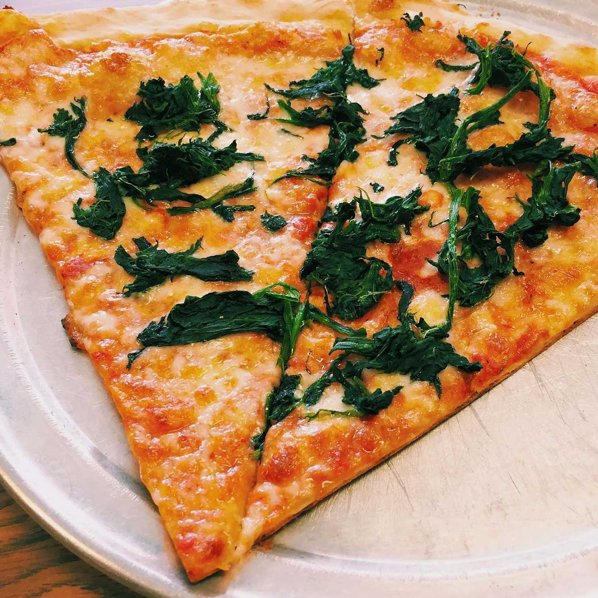
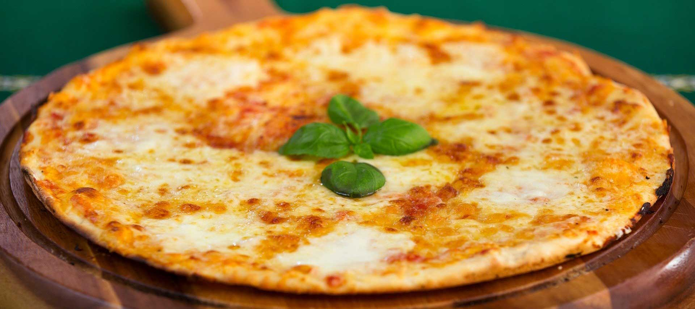

Some people look forward to a glass of wine after a long work week, and others look forward to hitting the gym to blow off some steam. While I enjoy the occasional glass of wine and exercise regularly, nothing makes me feel more refreshed and recharged than a hot, cheesy, pizza.
Eating pizza is my favorite hobby and I'll never tire of it. There are so many varieties, so I never get bored, but my favorite is just a regular cheese pie. Between the dough style, consistency of the sauce, topping options... The possibilities are endless! I enjoy finding new pizza restaurants to try, and seeing how their pizza compares to some of my favorites.
My favorite pizza restaurant at the moment is A&V Pizzeria in Yonkers, NY. It's definitely New York-Style pizza, but the dough is a little thicker and chewier than your average dollar slice. The sauce is just savory enough to not overpower the cheese, which they apply in a perfect cheese to sauce ratio. So far, I've had a regular cheese and pepperoni pizza from there, but I plan to venture onward with my topping selection.
